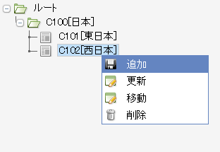

3.5. 分析コード登録¶
任意の分割・任意のレベルでのセグメント管理を行うために、仕訳伝票に登録する分析コード、ならびにその体系を登録します。
コラム
分析コードの利用は任意です。セグメント管理を行う要求がある場合に実施してください。
3.5.1. 着手条件¶
アクセス権設定までの作業を終えていること。
3.5.2. 分析コード設計¶
分析コードは以下の体系・特性を持っています。
分析軸とする「分析種別」が最上位の概念です。
各分析種別には分析軸の値となる分析コードを登録します。
分析コードは階層構造をもたせることもできます。階層数に制限はありません。
分析コードを階層化した単位を、「分析体系」として登録します。
分析体系別の帳票出力、分析コードの集計単位別の帳票出力が可能となります
Biz∫会計の仕訳入力項目には、「分析フィールド」と呼ばれるフィールドがあります。
各分析種別は分析フィールドに関連づけることができます。
分析フィールドには20個までの分析種別を関連づけることが可能です。
分析フィールド登録を参照してください
コラム
分析フィールドの登録は分析フィールド登録で実施するため、現時点では未定義でもかまいません。
Biz∫会計には、分析フィールドのほか、分析テキストという入力項目があり、任意の文字列を設定することができます。
例えばBiz∫会計以外の（外部APLの）付与する管理コードなどを伝票に記録し、検索キーとするケースに利用することができます。
分析フィールド・分析種別・分析コードの関係：

分析種別・分析体系・分析コード階層の関係：

これらを踏まえ、目的別の分析コード体系を設計します。例えば「地域」を分析軸としたい場合、次図のようなコード体系設計となります。
分析コード体系設計の例：

分析コード投入用シートの例：

3.5.3. 実行手順¶
Biz∫会計管理者アカウントでポータル画面にログインし、分析種別単位に、属する分析コード、分析体系を登録します。
メニュー
Biz∫ APF アドミニストレーション マスタ管理 分析コード 分析コード管理
各分析体系について、分析コードの階層入力を行う際は、対象とする分析体系を選択し、「階層」ボタンを押下します。
ルートノード、もしくは中間ノードを選択・右クリックし、中間ノード・末端ノードの追加を行います。

コラム
一括登録を行う場合は、シート「マスタ設定シート_分析種別.csv」、「マスタ設定シート_分析コード体系.csv」、「マスタ設定シート_分析コード.csv」、「マスタ設定シート_分析コード階層.csv」の所定のフォーマットに従って項目を埋めたcsvファイルを準備し、それぞれ対応するメニューの「SF5:一括登録」よりファイルをアップロード後、ダイアログの「F5:実行」を押下し、ロードします。

3.5.4. 完了条件¶
画面より検索を行い、分析種別、分析コードの入力結果を確認します。
分析体系別に、分析コードの階層構造が設計通りであることを確認します。
Biz∫会計の分析フィールド管理画面にて、登録した分析種別が選択肢として表示されることを確認します。
メニュー
Biz∫ 会計 会計コア マスタメンテナンス 基本設定管理 分析フィールド管理